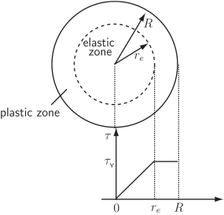

Long description: twist

Alt text: A diagram showing a circular cross-section divided into elastic and plastic zones, alongside a graph representing the relationship between applied torque and radial distance.
This description was generated by AI and has not been verified by a human. If you spot an error, please use the feedback link below.
- The diagram depicts a circular cross-section that is conceptually divided into two regions: an inner, dashed circle labeled "elastic zone" and an outer ring labeled "plastic zone".
- Radial lines extending from the center indicate the radii \(r_e\) and \(R\). The radius \(r_e\) marks the boundary between the elastic and plastic zones, while \(R\) represents the outer radius of the object.
- Below the circular diagram is a graph plotting torque, denoted by the symbol \(\tau\), on the vertical axis, against radial distance on the horizontal axis.
- The graph shows that the torque \(\tau\) is zero at a radial distance of zero. As the distance increases, the torque increases linearly, reaching a constant value, \(\tau_y\), at the radius \(r_e\). This value \(\tau_y\) corresponds to the transition between the two zones.
- The graph maintains the constant torque value \(\tau_y\) across the entire range from \(r_e\) to \(R\).